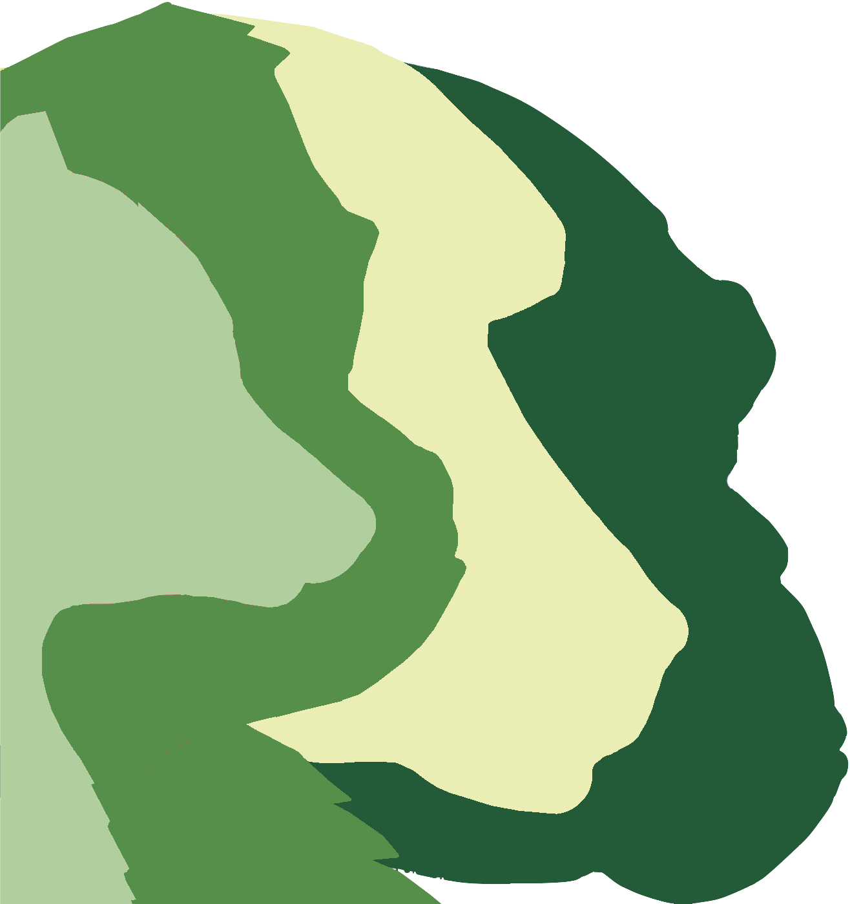

12 Yönetim
12.1 Geçici Kurul
Bir kuruluşun ihtiyaç duyduğu ilk şey, bu kılavuzun devamında yer alan işleri üstlenebilecek olan geçici bir kuruldur. Başlangıçta karar verilmesi gereken birçok konu olacaktır ve bu kararları 5-10 kişilik bir ekiple yapmak işleri kolaylaştıracaktır. Organizasyonun ne kadar demokratik olmasını isterseniz isteyin, çoğu üye her kararda rol oynayacak kadar vakte sahip olmayabilir.
Geçici kurulun görev süresince halletmesi gereken ve yerine geçecek kişilerin göreve gelmesiyle birlikte bitecek olan zaman aralığını belirlenmesi ve bu aralıkta yapılması geren işler hakkında bir görev listesi oluşturulabilir. Bunlardan bazıları:
- Resmi isim ve logo Section 12.2
- Üyelik takibi Section 12.3
- Uygulama pratikleri Section 12.4
- Yazarlık politikası Section 12.5
- Davranış kuralları Section 12.6
- İletişim kanallarının hazırlanması Chapter 13
- Sosyal medya hesaplarının kurulması Section 13.3
- İş birliği araçlarının ayarlanması Chapter 14
- İnternet sitesi kurulumu Chapter 15
12.2 İsim ve Logo
Organizasyonun ismi iyi düşünülmüş olmalı. Bu isim daha önce kullanılmamış, kulağa hoş gelecek şekilde kısaltılabilen, diğer dillerde olumsuz anlamlara gelmeyen bir isim olmalıdır. Örneğin, ManyXXXX sıkça kullanılan bir marka ismidir. Bu isim, grupların benzer amaç, değer ve yapıyı taşıdığını gösterir (ManyBabies, ManyFaces, EEGManyLabs, ManyAnalysts, ManyPrimates, ManyDogs, ManyBirds, ManyGoats, ManyFishes vs.). Ayrıca, seçtiğiniz bu marka ismi, bütün sosyal medya platformlarında, (Section 13.3) kullanılacak araçlarda, (Chapter 14) ve internet siteleri için gerekecek domain isminde (Section 15.5) kullanıma uygun olmalıdır.
Ayrıca, iyi bir logonuz olmalıdır. Çoğu sosyal medya sitesi için bir yuvarlak ya da karenin içinde simgenizin yer aldığı bir logoya ihtiyaç duyulur. Bunun dışında, afiş formatında bir resim de kullanılabilir. İyi bir logo ayırt edilebilen, az metin içeren, küçük boyutlarda bir logodur. Çalıştığınız alana dair siluetler kullanmak sıkça başvurulan yollar arasındadır. Logonun formatı PNG gibi transparan zemin kullanılarak oluşturulmalıdır (logonuz kare değilse). Ayrıca, koyu ve açık arka planlarda logonuzun nasıl göründüğünü kontrol etmelisiniz (açık ve koyu planlarda nasıl göründüğünü kontrol etmek için sol üstten bu sayfayı değiştirebilirsiniz).





12.3 Üyelik Takibi
Üyelik takibi nasıl yapılmalıdır? Yeni kurulan bir organizasyon genelde aidat toplamaz, bu yüzden kimlerin dahil olduğunu bilmek için başka yollar gereklidir. Organizasyonlar kaçınılmaz bir şekilde “82 ülkede 1350 üyeye sahibiz!” şeklinde üyeliklerin haritasını gösteren bir bilgilendirme yapmak isteyeceklerdir.
Öncelikle ilgi alanı kayıt formu (Section 11.1) ilk üyeliklerin takibi açısından kullanılabilir. Ancak, üyelerin uzmanlık alanları katkı sağlayabilecekleri konular ve üstlenmek istedikleri görevler gibi konularda daha fazla bilgi sahibi olmak istemeniz muhtemeldir. ManyBabies dünya çapındaki üyeliklerini gösteren bir üye takip uygulamasına sahiptir.membership tracker
Bir diğer konu ise, aktif olan ve aktif olmayan üyelerin takibinin nasıl yapılacağıdır. Üyelikleri bir üyelikten ayrılma talebi almadığınız sürece sonsuza dek sürdürebilirsiniz. Bu stratejinin en büyük avantajı üye sayınızda sürekli bir artış olacak olmasıdır. Öte yandan, her yıl daha fazla geri dönen e-posta ile karşılaşırsınız. Ayrıca, etkinliklerinizi planlarken kimin aktif olduğunu ya da kapasiteyi belirlerken güçlükler yaşayabilirsiniz. Bu sebeple alternatif bir çözüm olarak, üyelikleri bir yıl gibi ya da bir sene sonunda tekrar katılım gerecek şekilde belli bir zamanla sınırlandırabilirsiniz. Bu sayede, üyelikleriniz hakkında daha doğru ve gerçekçi bilgiler edinebilirsiniz. Ancak, bu yolun da riskleri olduğu unutulmamalıdır. Yeniden katılmayı unutabileceklerini ve bu sistemin yılda bir uğraşı gerektireceğini unutmamak gerekir.
12.4 Uygulama Pratikleri
Diğer bazı büyük ekip bilimi organizasyonlarına bakın ve hangi projelerin yürütüleceğine karar vermek için hangi modeli kullanmak istediğinize karar verin. Eğer grubunuzun iyi bir zemine oturtulmuş bir projesi varsa, bu adımı atlayabilirsiniz.
Örneğin, Psychological Science Accelerator resmi bir şekilde çalışma seçim çağrıları yapar. Burada proje başvuruları yapılır ve sonra iletişim ağının mevcut kapasitesi göz önüne alındığında, çalışma seçim komitesi yürütülecek projeleri seçmeden önce projeler eleştirmenler ve tüm üyeler tarafından değerlendirilir.
ManyBabies project proposal form, resmi bir proje öneri formu kullanmaktadır ancak son teslim tarihi konusunda belli bir sınırlandırma yoktur. ManyFaces şu anda daha az resmi bir sürece sahip bir uygulamadır. Burada, iş projeleri tartışma kanalları aracılığıyla görüşülür, değerlendilir ve buna göre yeterli ilgi olduğu takdirde çalışma grupları oluşturulabilir.
12.6 Davranış Kuralları
Davranış kuralları, üyelik değerlerini, standartlarını ve görevlerini net bir şekilde ortaya koyar. Bu kuralların var olması kötü davranışları engellemez ancak organizasyonunuzun değerleri hakkında bilgi vermenin ilk adımıdır. İletişim kurma kuralları şunları içermelidir (adapted from How to Respond to Code of Conduct Reports):
- Davranış kurallarının amacını açıklayan kısa bir açıklama metni
- Kabul görmeyecek davranışlar listesi
- Bu davranış kurallarının nerede geçerli olacağı
- Davranış kurallarını ihlal etmenin olası sonuçları
- Davranış kuralların ihlalinin nasıl bildirilebileceği hakkında detaylı, spesifik, basit talimatları içeren bir liste
- Davranış kuralların raporunu ele alabilecek kişilerin listesi
- Bir ihlal söz konusu olduğunda kişinin üyelikten çekileceğine dair söz
Davranış kurallarını geliştirebilmek adına kullanılabilecek kaynaklar:
- Contributor Covenant: açık kaynaklı yazılım projeleri için geliştirilmiş
- How to Respond to Code of Conduct Reports: içten bir tavsiye
- Geek feminism community anti-harassment policy
İletişim ve davranış kuralları geliştirirken kullanılabilecek modeller: